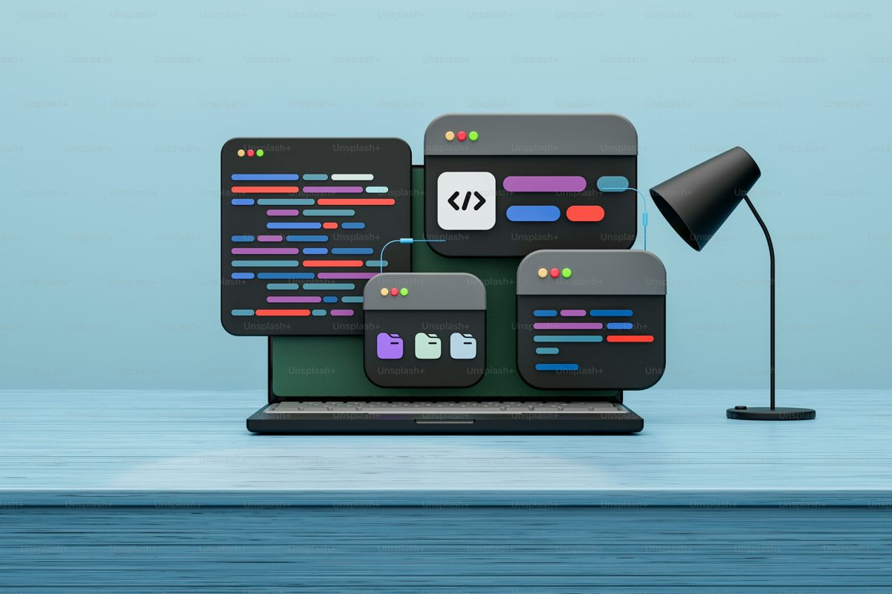
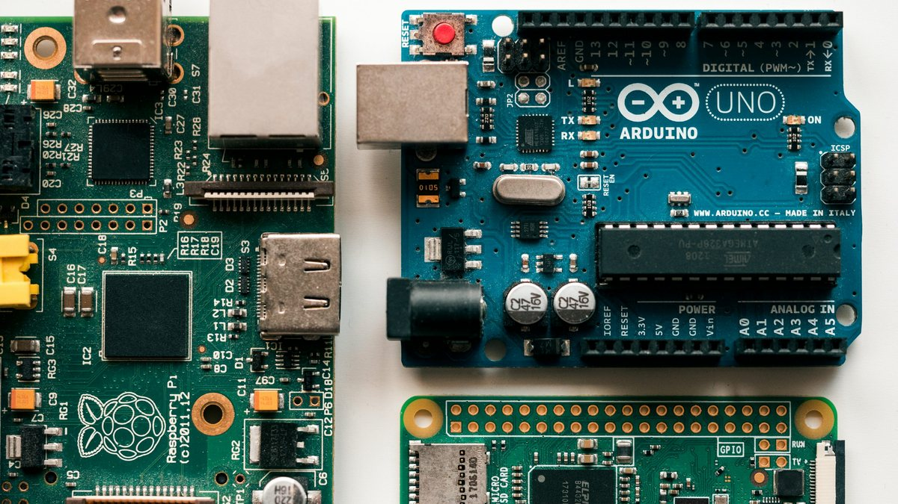

বাংলায় পাইথন
পাইথনের ভিত্তি, ফাংশন, কন্ট্রোল ফ্লো, ডেটা স্ট্রাকচার, ফাইল, রেগুলার এক্সপ্রেশন ও অবজেক্ট-ওরিয়েন্টেড প্রোগ্রামিং—অধ্যায়ভিত্তিক বাংলা গাইড।
শেখা শুরু করুনসবাই মিলে সঠিকভাবে শিখি ও ভাগ করে নিই প্রোগ্রামিং এবং সফটওয়্যার ডেভেলপমেন্টের খুঁটিনাটি—বাংলায়।
পাইথনের ভিত্তি, ফাংশন, কন্ট্রোল ফ্লো, ডেটা স্ট্রাকচার, ফাইল, রেগুলার এক্সপ্রেশন ও অবজেক্ট-ওরিয়েন্টেড প্রোগ্রামিং—অধ্যায়ভিত্তিক বাংলা গাইড।
শেখা শুরু করুনজাভা প্রোগ্রামিংয়ের ভিত্তি, অবজেক্ট-ওরিয়েন্টেড ধারণা, ব্যবহারিক উদাহরণ ও অনুশীলনসহ বিশ্ববিদ্যালয়ের শিক্ষার্থীদের জন্য বাংলা কোর্স।
শেখা শুরু করুনসি ভাষার পরিচিতি থেকে কন্ট্রোল ফ্লো, অ্যারে, পয়েন্টার, ফাংশন, স্ট্রাকচার ও ফাইল ইনপুট-আউটপুট—একটি বাংলা বই।
শেখা শুরু করুনপিএইচপি ভাষার মৌলিক বিষয়, অ্যারে, অবজেক্ট-ওরিয়েন্টেড প্রোগ্রামিং এবং প্রচলিত ডিজাইন প্যাটার্ন নিয়ে শেখার বই।
শেখা শুরু করুনLinux shell, command line, ফাইল, প্রসেস, নেটওয়ার্কিং ও টেক্সট টুল ব্যবহার এবং স্ক্রিপ্টিংয়ের বাংলা পাঠ।
শেখা শুরু করুনডেটা প্রস্তুতি, predictive modeling ও linear regression—Python, MATLAB এবং JavaScript উদাহরণসহ।
শেখা শুরু করুন
Objective-C ও Swift-এর প্রাথমিক পাঠ এবং iOS অ্যাপ ও গেম ডেভেলপমেন্টের বাংলা কোর্স।
শেখা শুরু করুনNeural network, CNN এবং TensorFlow-সহ Python-এ হাতে-কলমে image classification শেখার পাঠ।
শেখা শুরু করুন
Arduino-এর ভিত্তি, ইলেকট্রনিক্স, interface, serial communication ও robotics নিয়ে পাঠ এবং code example।
শেখা শুরু করুনপরিসংখ্যান, data mining এবং data science-এর মৌলিক ধারণা নিয়ে বাংলায় লেখা পরিচিতিমূলক বই।
শেখা শুরু করুনQt ও Qt Creator ব্যবহার করে C++-এ GUI অ্যাপ তৈরি; Linux, macOS ও Windows-এ setup-সহ বাংলা পাঠ।
শেখা শুরু করুনSQL ও MySQL-এর ভিত্তি, JOIN, functions, database design এবং query optimization নিয়ে বাংলা কোর্স।
শেখা শুরু করুনGo-এর variable, function, control flow, array, slice ও map নিয়ে বাংলায় সাজানো প্রোগ্রামিং বই।
শেখা শুরু করুনClojure, Lisp, functional programming ও concurrency-র পরিচিতি—উদাহরণসহ বাংলা বই।
শেখা শুরু করুনJavaScript syntax, function, array, object, string, operator, regular expression ও ES6 নিয়ে বাংলা বই।
শেখা শুরু করুনLaravel installation, routing, controller, Blade view, migration, middleware ও CRUD project নিয়ে বাংলা গাইড।
শেখা শুরু করুনDjango project, MTV, model ও ORM, view, template থেকে deployment পর্যন্ত বাংলা টিউটোরিয়াল।
শেখা শুরু করুনGit basics, repository, remote, collaboration, branching, git-flow, log ও cherry-pick নিয়ে বাংলা গাইড।
শেখা শুরু করুনJava/JVM, static typing এবং functional ও object-oriented programming ঘিরে Scala-র বাংলা পরিচিতি।
শেখা শুরু করুনশুরু থেকে Ruby install ও syntax শেখার জন্য সরল, শিক্ষানবিশ-বান্ধব বাংলা গাইড।
শেখা শুরু করুনলেখক ও ব্লগের জন্য Jekyll থিম—page ও post layout, Sass skin, social links এবং SEO metadata-সহ।
রিসোর্স দেখুনপ্রোগ্রামিং ও সফটওয়্যার ডেভেলপমেন্ট নিয়ে বাংলা Markdown পোস্ট, পৃষ্ঠা ও গল্পের Jekyll ব্লগ।
ব্লগ দেখুনবাংলা টিউটোরিয়াল, reference, video, algorithm ও data structure শেখার উপকরণের সাজানো তালিকা।
রিসোর্স দেখুন
আপনার মতামত জানান, কোনো রিপোতে অবদান রাখুন, অথবা নতুন বাংলা রিসোর্স যুক্ত করার প্রস্তাব দিন। এই সংগ্রহটি উন্মুক্ত অবদানের মাধ্যমে এগিয়ে চলুক।
অবদান বা প্রস্তাব দিনবাংলায় প্রোগ্রামিং এবং সফটওয়্যার ডেভেলপমেন্ট শেখার জন্য এটি একটি কেন্দ্রীয় সংগ্রহ। পাইথন, জাভা, C, JavaScript, Go, ডেটা সায়েন্স, মেশিন লার্নিং, ওয়েব ফ্রেমওয়ার্ক এবং ডেভেলপার টুলসের রিসোর্স এখানে এক জায়গায় পাওয়া যায়।
প্রতিটি বই বা রিসোর্স আলাদা GitHub রিপোজিটরিতে সংরক্ষিত। কার্ডের “শেখা শুরু করুন” লিংকটি সরাসরি সেই মূল রিপোজিটরিতে নিয়ে যায়, যেখানে README ও সূচিপত্র থেকে অধ্যায় পড়া যায়।
কোনো অধ্যায়ে ভুল, অসম্পূর্ণতা বা উন্নতির সুযোগ পেলে সংশ্লিষ্ট রিপোজিটরি খুলুন। Issue তৈরি করুন অথবা repository fork করে Pull Request পাঠান।